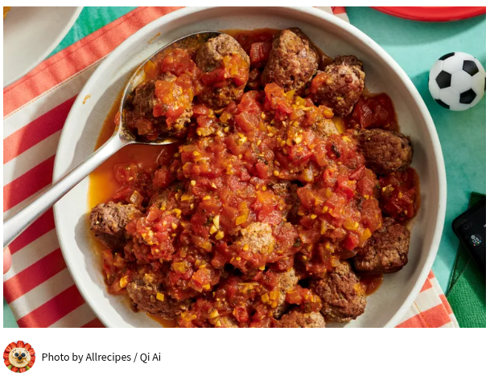

Algerian Kefta (Meatballs)

Ingredients
- 1 pound lean ground beef
- 4 cloves garlic, minced, divided
- ¼ cup finely chopped onion, divided
- salt and pepper to taste
- 3 roma (plum) tomatoes, diced
- 1 teaspoon dried parsley
- ½ teaspoon ras el hanout (Optional)
- ½ cup water
Directions
- Combine ground beef with 1/2 of the minced garlic and 1 tablespoon chopped onion in a large bowl. Mix with your hands until fully incorporated. Shape meat mixture into 1 1/2-inch oblong patties; you should have 12 to 14 meatballs.
- Heat a large skillet over medium-high heat. Brown patties in batches in the hot skillet until crispy on both sides and no longer pink in the center, about 10 minutes. Set meatballs aside in a rimmed serving dish.
- Reduce heat to medium and stir remaining chopped onion into drippings in the skillet. Season with salt and pepper. Cook, stirring constantly, until onion has softened and turned translucent, about 5 minutes. Stir in remaining garlic and cook for 30 seconds. Stir in Roma tomatoes, dried parsley, and ras el hanout. Pour in water. Cook until tomatoes are soft, about 5 minutes.
- Pour tomato sauce over meatballs to serve.
Home